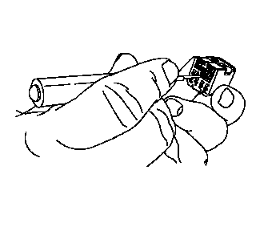

端子拆卸
专用工具
•
EL-38125-550
端子拆卸工具组件
•
EL-38125-580
端子拆卸工具组件
•
EL-35616
端子测试探针组件
关于当地同等工具，参见“
专用工具
”。
注意:
所有靠近发动机歧管、涡轮发动机和所有排气管的修理操作应当按照“高温接线修理”中的程序进行。
1.
在连接器端视图部分找到相应的连接器端视图。连接器端视图包含以下信息：
•
诊断探针工具
•
端子拆卸工具
•
端子/端接引线零件号
注意:
未使用合适的测试工具探针可能导致待测端子损坏。
2.
确定端子是否损坏。
•
按照连接器端视图，确定诊断探针工具的位置。连接器端视图描述了具体的颜色和零件号，帮助技术人员查找和使用正确的工具。
•
将探针工具连接至数字式万用表。
•
将探针工具插入孔内，并遵照“
用数字万用表进行故障排除
”的程序。
3.
断开连接器体进行维修。
4.
使用以下程序从连接器体上拆下端子。
注意:
“接线修理”部分阐述了修理特定连接器壳体的多个程序。
•
从连接器体松开端子之前，应拆下端子定位器 (TPA) 和连接器定位器 (CPA)。
•
查看连接器端视图，确定损坏的端子孔的位置，并从端子拆卸工具组件中找到合适的端子拆卸工具。
注意:
使用不正确的端子拆卸工具会损坏连接器体。
注意:
有些端子的拉杆必须先松开，端子才能松开。
•
将端子拆卸工具插入孔内。

5.
轻轻地将导线从连接器后部拉出。
6.
按照下面的“
修理连接器端子（端子修理）
、
修理连接器端子（终端引线修理）
”程序修理端子。
7.
将修好的端子重新安装回孔中。重复诊断程序以检验修理效果，并重新连接连接器壳体。